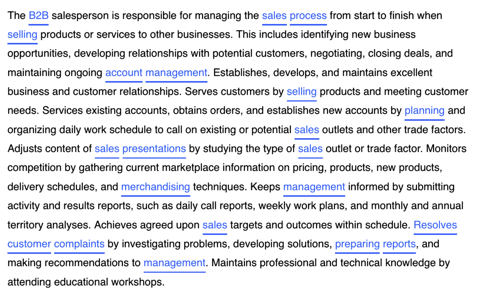
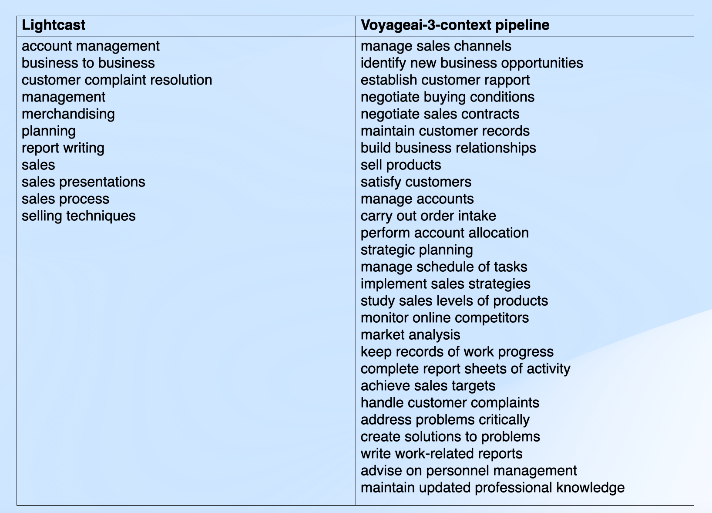
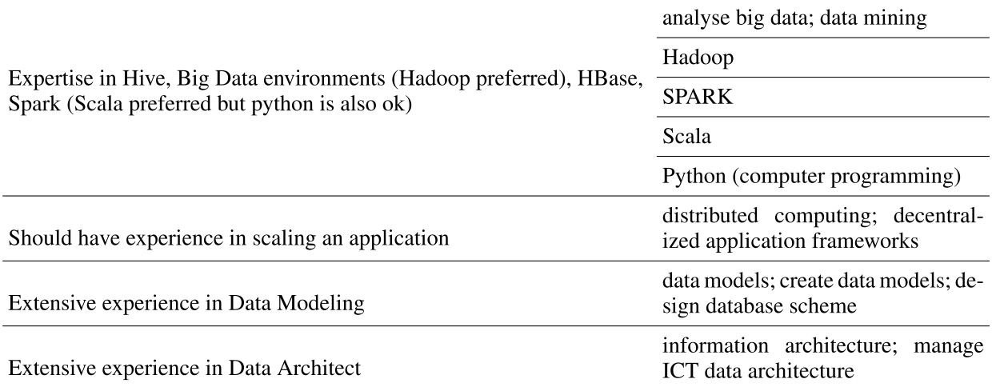

How precisely can embedding models match extracted skill spans to their canonical ESCO labels?

Skills Extraction: Lightcast

| Name | Language | Annotation | Size |
|---|---|---|---|
| SAYFULLINA [Sayfullina et al., 2018] | English | SM | 7,411 spans |
| GREEN [Green et al., 2022] | English | SM | 10,606 spans |
| SKILLSPAN [Zhang et al., 2022a] | English | SM | 9,633 spans |
| HOUSE/TECH [Decorte et al., 2022] | English | SM – SR | 1,618 spans |
| FIJO [Beauchemin et al., 2022] | French | SM – SR | 932 spans |
| KOMPETENCER [Zhang et al., 2022b] | Danish | SM – SR | 920 spans |
| GNEHM-ICT [Gnehm et al., 2022] | Swiss-German | SM – SR | 10,995 spans |
| SKILL-XL | English | SM – SR | 8,471 labels |
| KARIYER | Turkish | SM – SR | 4,819 spans |
SM = Skill Mention detection · SR = Skill Resolution (linking to taxonomy)

Standardizing skills ·
The quality of existing gold labels is not fully transparent — little detail on annotators, annotation protocols, or inter-coder reliability.
Current benchmarks are skewed toward tech and service-sector vacancies, limiting representativeness for other occupations and industries.
No widely used Polish benchmark datasets currently exist, creating a major evaluation gap for Polish labour market data.
Manually annotated skill datasets are scarce and expensive — synthetic data generates large-scale training pairs covering much more of the taxonomy
Synthetic examples resemble real job-ad language, so the model learns to recognize skills expressed indirectly rather than named explicitly
LLMs generate paraphrases, implicit mentions, and job-ad style sentences beyond simple dictionary matching
JobSkape generates realistic synthetic postings for skill matching
Strong retrieval models rely on synthetic data generation combined with hard-negative mining
Central to NV-Embed and domain-adapted ESCOXLM-R
LLM copies the ESCO label verbatim — model learns surface overlap, not semantics
explicitly address this with more diverse generation
Short definitional sentences are too easy and don't resemble real job-ad language
JobSkape motivation: earlier synthetic examples lacked recruitment-style phrasing
Random negatives are trivial; training needs sibling skills and lexically similar distractors
Hard-negative design is central in and
A span may map to different ESCO skills depending on occupational or sentential context
Taxonomy-aware models like ESCOXLM-R partially address structural cues
RP@1 alone is insufficient — MRR, RP@k, and ranking pipelines provide a fairer picture
The strongest setup combines contrastive training with diverse positives, realistic phrasing, and hard negatives — optionally followed by a two-stage bi-encoder → cross-encoder pipeline
· ·
[CLS] sentence [SEP] skill descriptionUsed in our benchmark as second-stage reranker (rerank-2.5) · ·
Measures how many correct labels appear among the top-K ranked predictions.
\(\text{Rel}(n,k)\) is a binary indicator of whether the \(k\)-th ranked label is correct for sample \(n\), and \(R_n\) is the number of gold labels for sample \(n\).
Measures how high the first correct label appears in the ranking.
\(\text{rank}_i\) is the position of the first correct ESCO label in the ranked list for sample \(i\).
Encode all 13,890 preferredLabel entries into dense vectors using an embedding model. Store in a FAISS index for fast retrieval.
Encode each extracted skill span / sub_span from test annotations using the same model.
For each query, retrieve top-K nearest ESCO labels by cosine similarity using FAISS IndexFlatIP.
Compare predicted ESCO labels against human-annotated gold_label. Compute RP@K and MRR.
preferredLabelspan / sub_spanlabel [SEP] descriptionspan [SEP] sentenceSimple concatenation with [SEP] degraded performance for OpenAI and ESCOXLM-R. Native contextual models (voyage-context-3) fared better.
| Model | Type | Dims | Access |
|---|---|---|---|
| ConTeXT-ST | Bi-encoder (MPNet) | 768 | Open-source |
| voyage-4-large | Bi-encoder (API) | 1024 | Proprietary API |
| voyage-context-3 | Contextual Bi-encoder | 1024 | Proprietary API |
| voyage-4-nano | Bi-encoder (local) | 1024 | Open-source |
| voyage-4-nano-ft | Fine-tuned Bi-encoder | 1024 | Open-source |
| text-embedding-3-large | Bi-encoder (API) | 3072 | Proprietary API |
| text-embedding-3-small | Bi-encoder (API) | 1536 | Proprietary API |
| all-MiniLM-L6-v2 | Bi-encoder | 384 | Open-source |
| NV-Embed-v2 | LLM Bi-encoder (Mistral-7B) | 4096 | Open-source |
| KaLM-Gemma3-12B | LLM Bi-encoder (Gemma3) | 3840 | Open-source |
| ESCO-XLM-R | Bi-encoder (XLM-R) | 1024 | Open-source |
| rerank-2.5 | Cross-encoder | — | Proprietary API |
rerank-2.5) re-scores each (query, candidate) pair jointlyResult: the general-purpose Voyage reranker degraded performance compared to domain-specific bi-encoders. Skill matching benefits from specialization over raw model capacity.